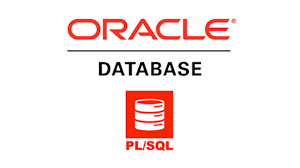

GROUP BY, HAVING, ORDER BY, JOIN, UNION, DISTINCT, INSERT, UPDATE, DELETE, CTE (Common Table
Expressions), Window Functions, CASE Statements, Aggregate Functions

This is to demonstrate my skills in SQL. I used SQL for Data Analysis and, Provide Actionable
Insights.
This is to demonstrate data analysis, predictive modeling, and actionable insights.
Proficient in Python libraries like scikit-learn, TensorFlow, and PyTorch. Experienced in fraud
detection, recommendation systems, and image classification. Passionate about applying machine
learning to solve real-world problems.

In Oracle PL/SQL, I use my skills for data analysis and to provide actionable insights. I excel
at writing efficient code for complex data processing tasks, including querying, manipulation,
and implementing business logic. My goal is to leverage these skills to drive data-centric
decision-making.